Retaining Walls & Hardscapes
Multiple wall, patio, and stone-step examples are included now so that part of the business is clearly represented.
See recent landscape, irrigation, retaining wall, mowing, excavation, and property improvement work from Spokane and surrounding areas. Every project shown here reflects real customers and real results.
Multiple wall, patio, and stone-step examples are included now so that part of the business is clearly represented.
From sprinkler systems to large-acreage irrigation and drainage prep, these photos show real installation capability.
Mowing, pruning, cleanup, bark refreshes, and low-maintenance transformations are included so routine services are visible too.
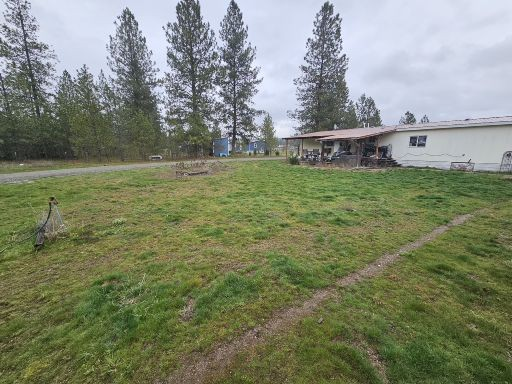
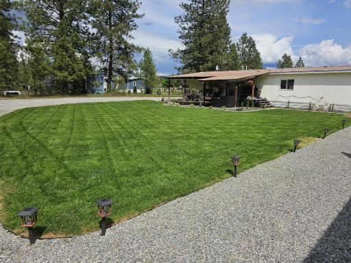
Full-property transformation with irrigation, drip line, lawn installation, decorative rock, curbed beds, and a cleaner, more functional layout throughout the property.
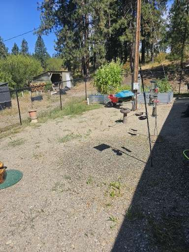
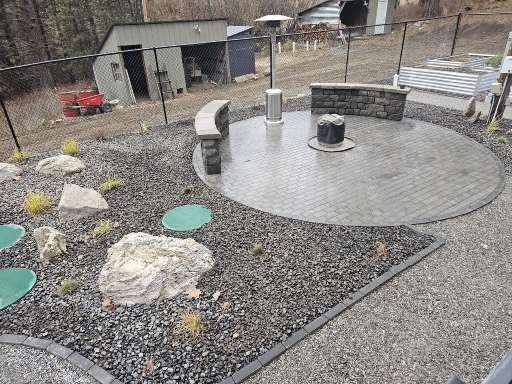
Major backyard redesign with grade correction, irrigation, retaining walls, stone steps, pathways, planting areas, and a circular patio with floating seat walls.
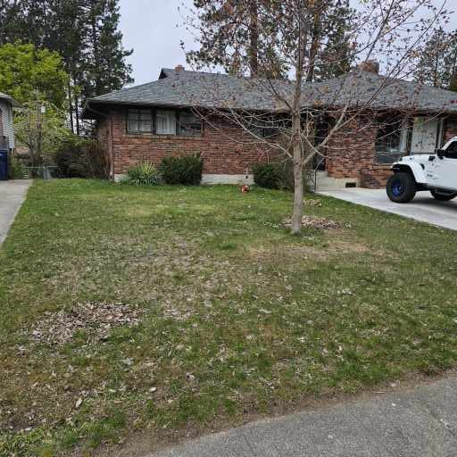
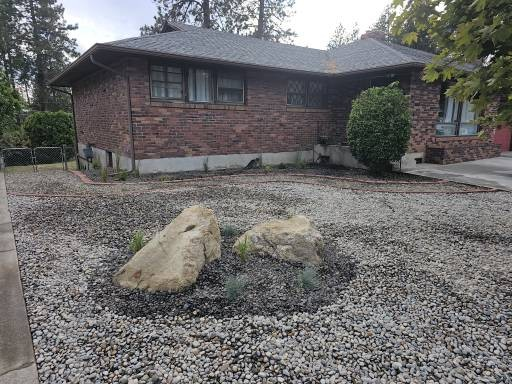
Full-property landscape improvement featuring irrigation installation, bed overhauls, shrub cleanup, a concrete patio pad, redesigned planting areas, sod removal, river rock installation, and accent boulders.
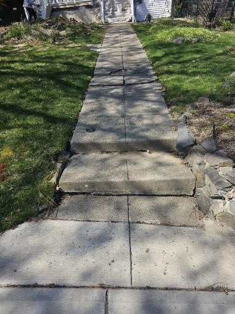
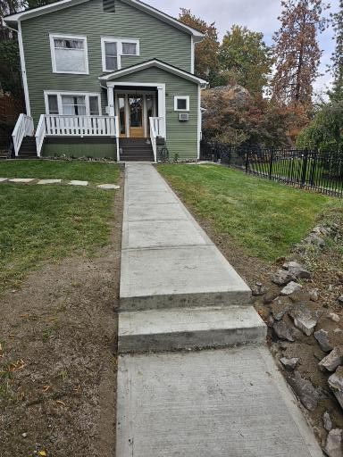
Old sidewalk tear-out and replacement with strong base prep, fiber reinforcement, iron reinforcement, and seeded lawn repair per customer preference.
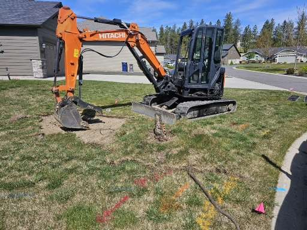
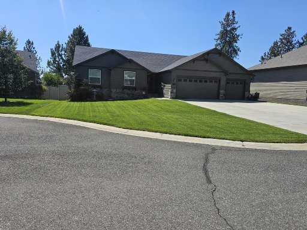
Tree stump removal, grading correction for a smoother lawn, and complete sod replacement for a clean, refreshed finish.
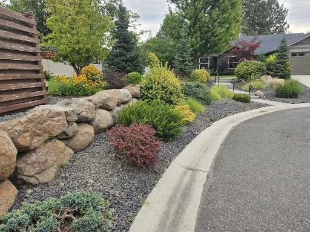
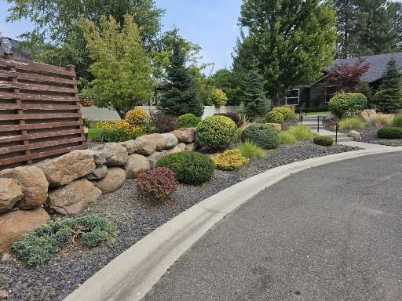
Pruning and cleanup of overgrown shrubs to restore shape, improve appearance, and give the property a cleaner, more maintained look.
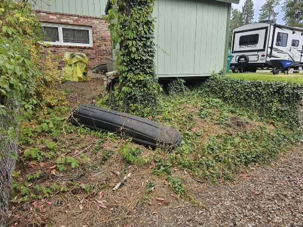
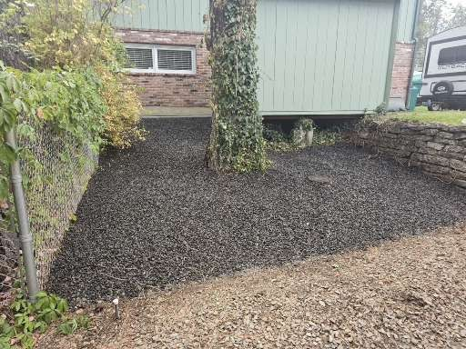
Weed and overgrowth removal, site preparation, landscape fabric installation, and a clean 3/4-inch chipped basalt finish for a lower-maintenance appearance.
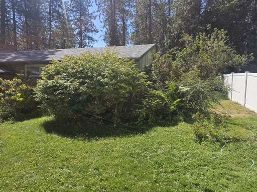
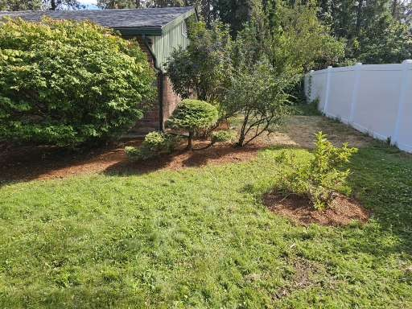
Bed cleanout, defined edging, pruning of overgrown shrubs, and fresh bark installation for a cleaner, more maintained appearance.
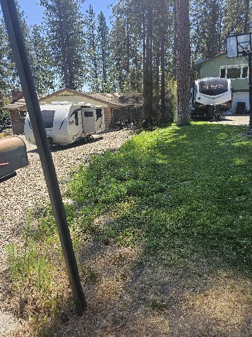
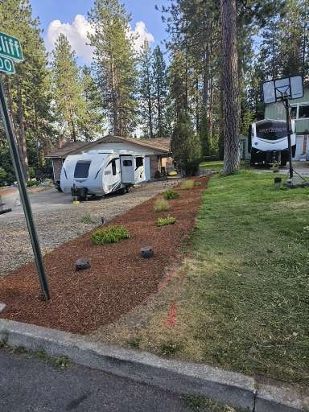
Cleanup of an overgrown bed, new edging, native Washington plant installation at the customer’s request, landscape fabric, and fresh bark for a lower-maintenance finish.
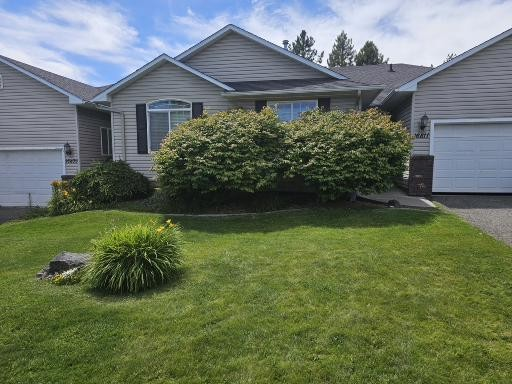
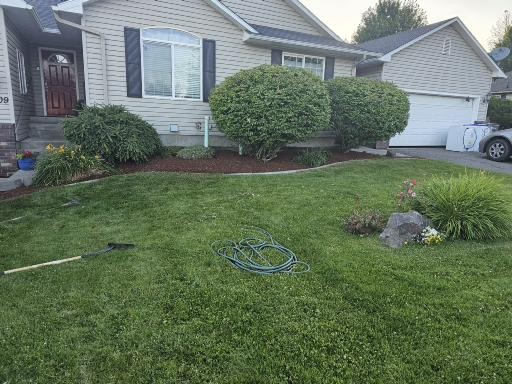
Front-yard landscape refresh featuring seasonal pruning, bed cleanout, and fresh bark installation.
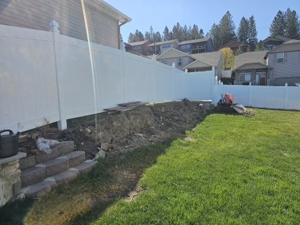
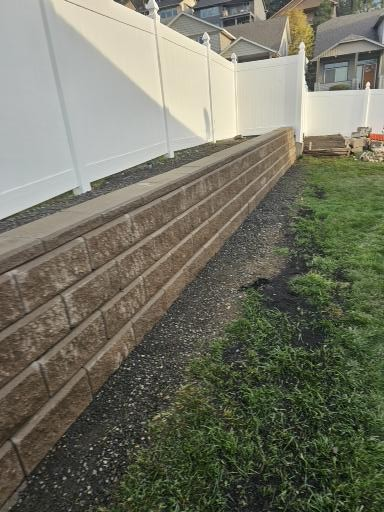
Removal of an old granite boulder retaining wall and steps, irrigation rerouting, granite cut for proper base prep, drainage installation, and construction of a new 40-foot Allan Block wall.
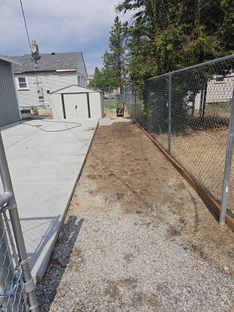
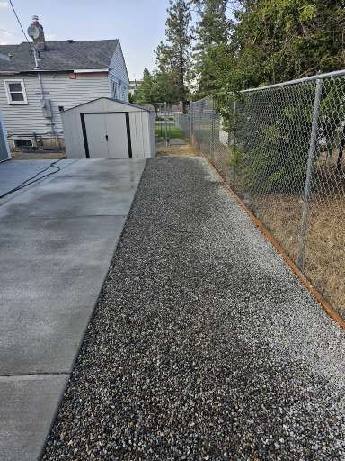
Site preparation and decorative rock installation for a cleaner, lower-maintenance finish along the concrete and fence line.
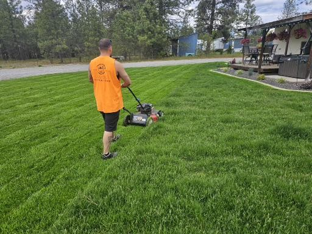
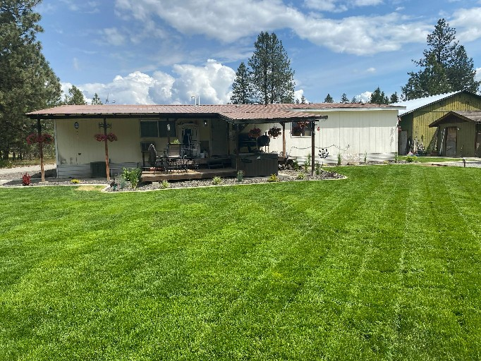
First cut on new sod growth showing finished lawn appearance, striping, and routine maintenance quality after installation.
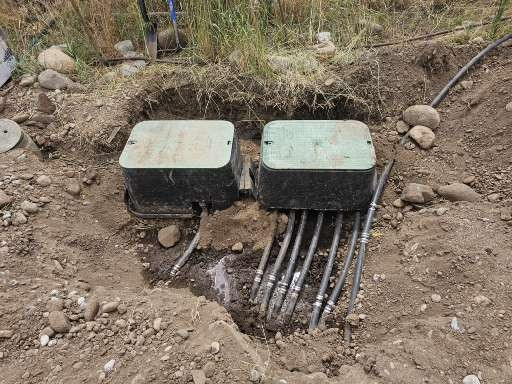
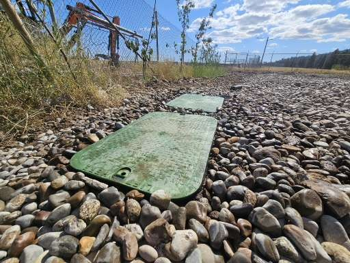
Large-property irrigation installation featuring an 8-zone system across 2.5 acres, designed for high-pressure and high-volume coverage with clean finishing around the valve box area.
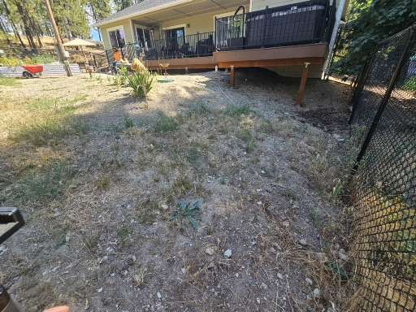
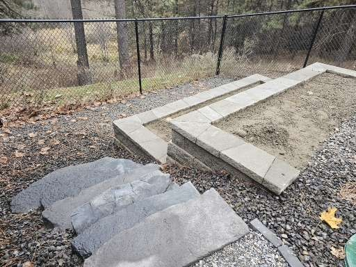
Custom stone steps and a step-up retaining wall system with two planting walls created a cleaner transition in grade and a more finished, usable outdoor layout.
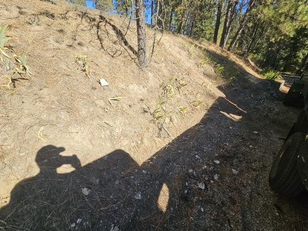
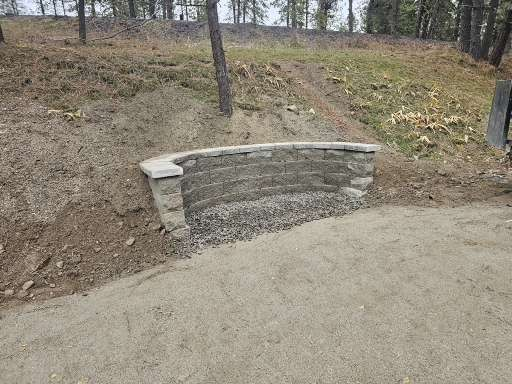
Retaining wall installed for a propane tank area, including jackhammering through decomposed granite for proper installation and a cleaner utility-area finish.
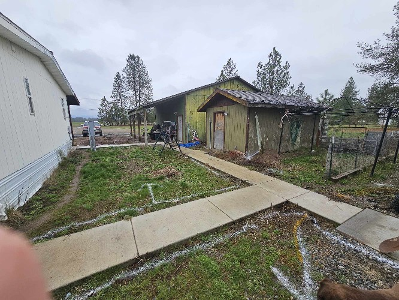
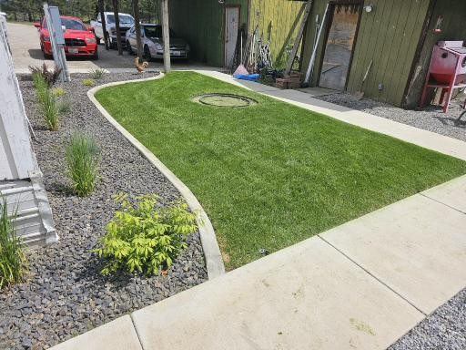
Irrigation installation, rock beds, concrete curbing, low-maintenance plants and grasses, and fresh sod for a cleaner, easier-to-maintain property.
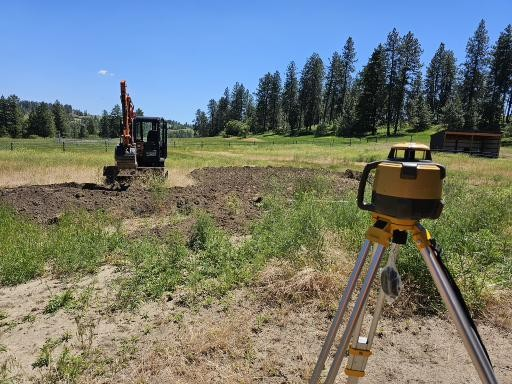
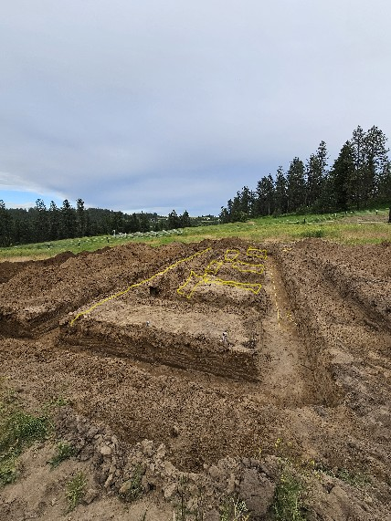
Foundation digging for a barn and stable areas, completed to Washington State and Spokane County standards with clean layout and grade preparation for future concrete work.
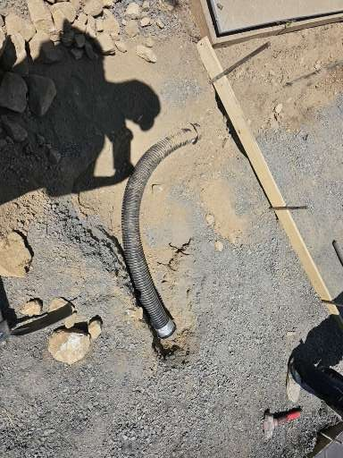
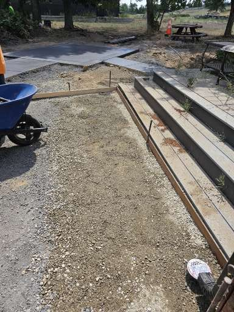
Drainage pipe installation beneath a future concrete area, finished and buried cleanly so the site was ready for the concrete company to move forward.